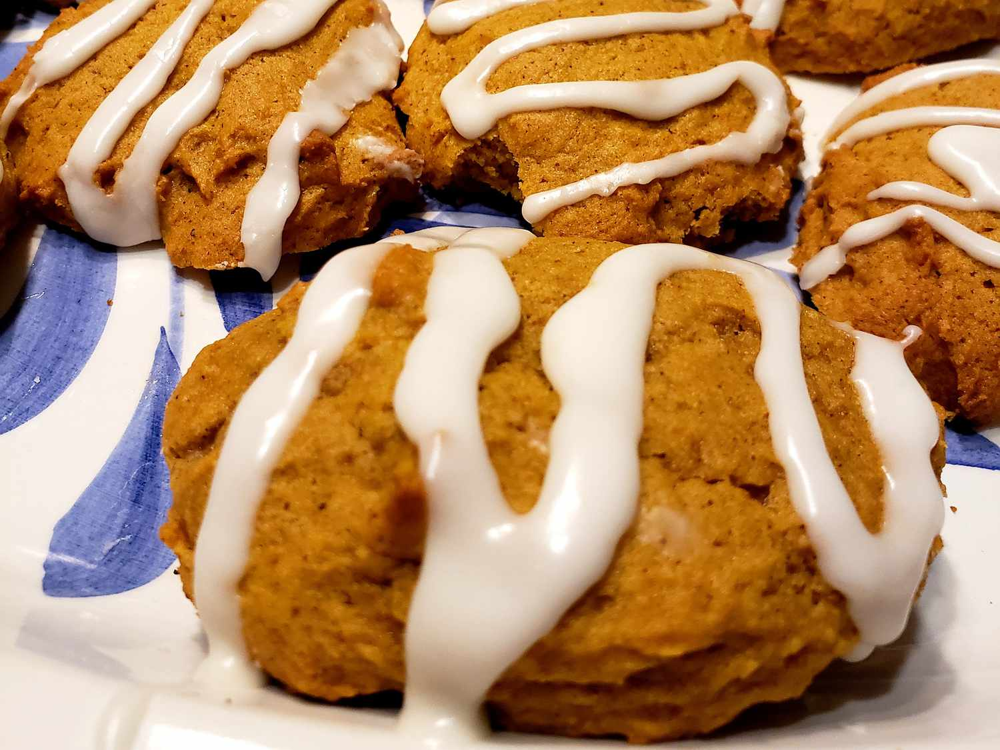

Iced Pumpkin Cookies

Description
Super soft and fluffy Iced Pumpkin Cookies, topped with a sweet vanilla cinnamon icing
and are a must for the fall season. These unique pumpkin-flavored fall treats are very
tempting that you will want to make them again and again throughout the year and fall
especially.
Ingredients
- 2 ½ cups all-purpose flour
- 2 teaspoons ground cinnamon
- 1 teaspoon baking powder
- 1 teaspoon baking soda
- ½ teaspoon ground nutmeg
- ½ teaspoon ground cloves
- ½ teaspoon salt
- 1 ½ cups white sugar
- ½ cup butter, softened
- 1 cup canned pumpkin puree
- 1 large egg
- 1 teaspoon vanilla extract
- icing
- 2 cups confectioners' sugar
- 3 tablespoons milk
- 1 tablespoon melted butter
- 1 teaspoon vanilla extract
Steps
- Preheat the oven to 350 degrees F (175 degrees C). Grease two cookie sheets.
- To make the cookies: Combine flour, cinnamon, baking powder, baking soda,
nutmeg, cloves, and salt in a medium bowl.
- Cream together sugar and butter in a mixing bowl until fluffy, 2 to 3 minutes.
Add pumpkin, egg, and vanilla; beat until creamy. Mix in flour mixture until combined.
Drop tablespoonfuls of dough onto the prepared cookie sheets; flatten slightly.
- Bake in the preheated oven until centers are set, 15 to 20 minutes, switching racks halfway through.
Transfer cookies to a wire rack to cool to room temperature, about 30 minutes.
- Meanwhile, make the icing: Stir together confectioners' sugar, milk, butter,
and vanilla in a bowl until smooth. Add milk as needed, to achieve drizzling consistency.
- Drizzle icing over cooled cookies with a fork.